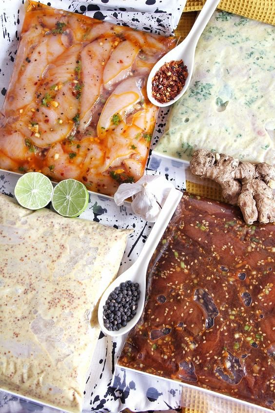

Marinade miel moutarde et sauce porto
Ingredients
4×
- 4 escalopes de poulet
- 2 c. à s. d'huile d'olive
- ail râpé
- 80 ml de miel
- 3 c. à s. de moutarde à l'ancienne
- 3 c. à s. de moutarde
- 50 g de beurre
- 50 g de farine
- 50 cl de bouillon
- 20 cl de madère ou porto

Préparation
Étape 1
Mariner 4 escalopes de poulet avec 2 c. à s. d'huile d'olive, de l’ail râpé, 80 ml de miel, 3 c. à s. de moutarde à l'ancienne et 3 c. à s. de moutarde.
Étape 2
Sauce porto : fondre 50 g de beurre, ajouter 50 g de farine, puis incorporer 50 cl de bouillon et 20 cl de madère ou porto.